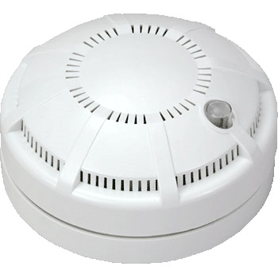
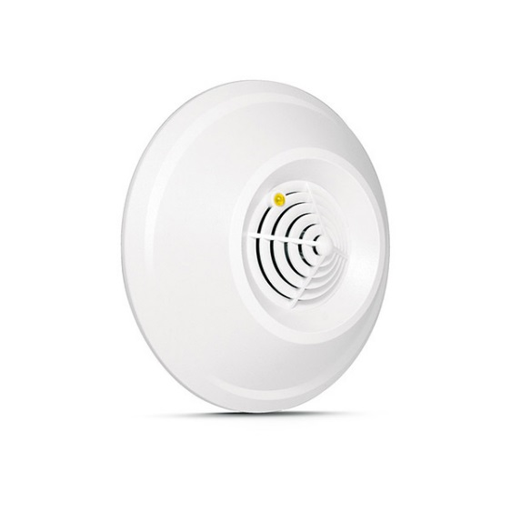
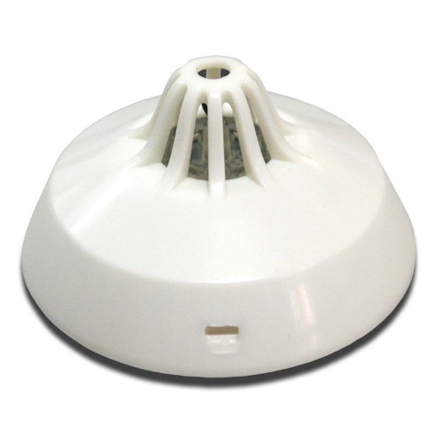
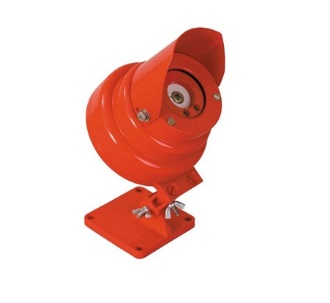
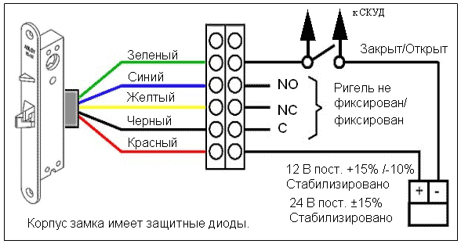
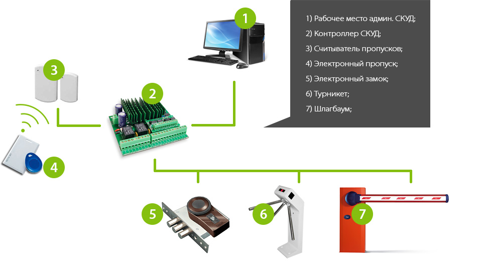

ПОДБОР ОБОРУДОВАНИЯ ПО ТЕХНИКО-НОРМАТИВНЫМ И ЭКОНОМИЧЕСКИМ ПОКАЗАТЕЛЯМ
Цели работы:
1. Необходимо провести подбор оборудования по технико-нормативным и экономическим показателям.
2. Оформить спецификацию систем безопасности
Теоретические сведения:
Подбор оборудования
Дымовые пожарные извещатели (рисунок 1), реагирующие на продукты горения, способные воздействовать на поглощающую или рассеивающую спо-собность излучения в инфракрасном, ультрафиолетовом или видимом диапазо-нах спектра. Дымовые извещатели могут быть точечными, линейными, аспира-ционными и автономными.

Рисунок 1 – Дымовой извещатель
Газовый извещатель – извещатель (рисунок 2), реагирующий на газы, вы-деляющиеся при тлении или горении материалов. Газовые извещатели могут реагировать на оксид углерода (углекислый или угарный газ), углеводородные соединения.

Рисунок 2 – Газовый извещатель
В пожарном тепловом извещателе (рисунок 3) тревожное извещение формируется при достижении температуры окружающей среды порогового значения. Извещатели предназначены для круглосуточной работы в закрытых отапливаемых помещениях и рассчитаны на совместную работу с приемно-контрольными приборами со шлейфами постоянного или знакопеременного тока.

Рисунок 3 – Тепловой извещатель
Пожарные извещатель пламени (рисунок 4) – извещатель, реагирующий на электромагнитное излучение пламени или тлеющего очага. Извещатели пла-мени применяются, как правило, для защиты зон, где необходима высокая эф-фективность обнаружения, поскольку обнаружение пожара извещателями пла-мени происходит в начальной фазе пожара, когда температура в помещении ещё далека от значений, при которых срабатывают тепловые пожарные извещатели.

Рисунок 4 – Извещатель пламени
Выбор извещателя необходимо осуществлять по необходимым парамертам и критериям, а также с учетом нормативных норм.
При выборе дымового\газового извещателя необходимо обратить внима-ние на его основные технические параметры:
• Чувствительность
• Напряжение питания
• Ток потребления в режиме «пожар» / дежурном
При наличии в помещении фальшпотолков, подвесных потолков и иных перекрытий, необходимо учесть нормы и правила проектирования, указанные в НПБ 88-2001.
Подбор оборудования для СКУД
При построении СКУД можно использовать любые электромагнитные и электромеханические замки (также электрозащелки), контрольно-пропускные системы, преграждающие устройства, датчики состояния дверей и окон, и т.п.
Простейшая конфигурация электромеханического замка (рисунок 5) включает в себя исполнительное устройство (собственно замок с блоком пита-ния) и считыватель кода с контроллером, который подаёт сигнал на открыва-ние; эти элементы приобретают по отдельности либо они заключены в один корпус (замок-моноблок). Дополнительно могут быть установлены выносные и системные (групповые) контроллеры, датчики, тревожные и защитные устрой-ства

Рисунок 5 - Схема подключения электромеханических замков
Основные технические параметры электромеханических замков:
• сила удержания
• потребляемый ток
• напряжение питания
• габаритные размеры
• количество циклов срабатывания
Для систем СКУД можно использовать различное другое более сложное оборудования в зависимости от категории доступа и категории защищаемого помещения (рисунок 6). Это могут быть как турникеты, шлагбаумы, электрон-ные проходные, считыватели пропусков в совокупности с электронными зам-ками, контроллеры и т.д. На рисунке 6 представлена простейшая схема постро-ения системы контроля и управления доступом.

Рисунок 6 – Система контроля доступом на объекте
Практическая часть:
1. Подобрать оборудование для разработанных систем безопасности по техническим и экономическим показателям
2. Оформить выходной документ – Спецификация систем безопасности.
3. Оформить отчет.
Содержание отчета:
1. Титульный лист
2. Цель работы
3. Вариант задания
4. Ход работы с пояснениями
5. Выводы по работе
Контрольные вопросы:
1. По каким техническим параметрам подбиралось оборудование?
2. Классифицируйте пожарные извещатели по принципу работы, по типу чувствительного элемента.
3. Классифицируйте охранные извещатели по принципу работы.
4. Классифицируйте извещатели по зоне контроля.
5. Какие охранные извещатели относятся к точечным.
6. Какие извещатели использовались в проекте чаще остальных и поче-му?